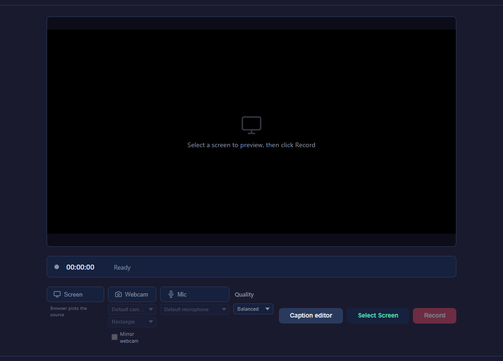
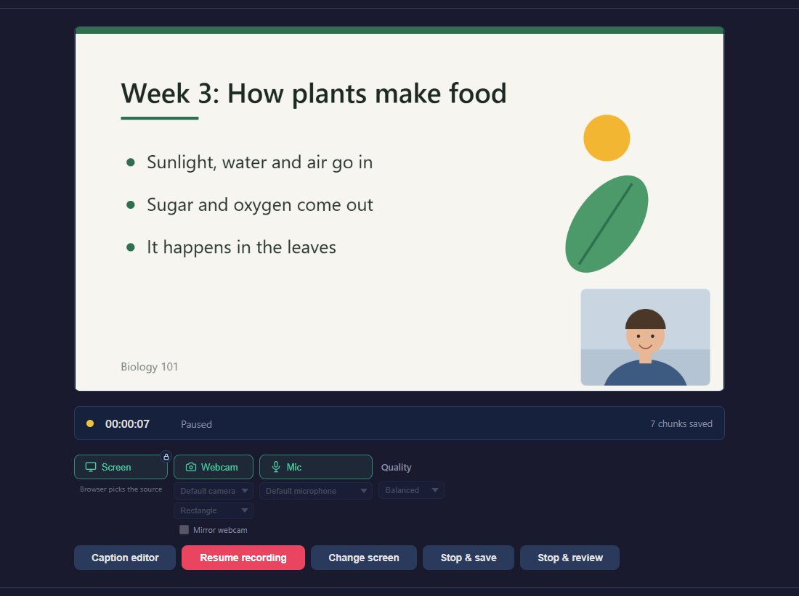
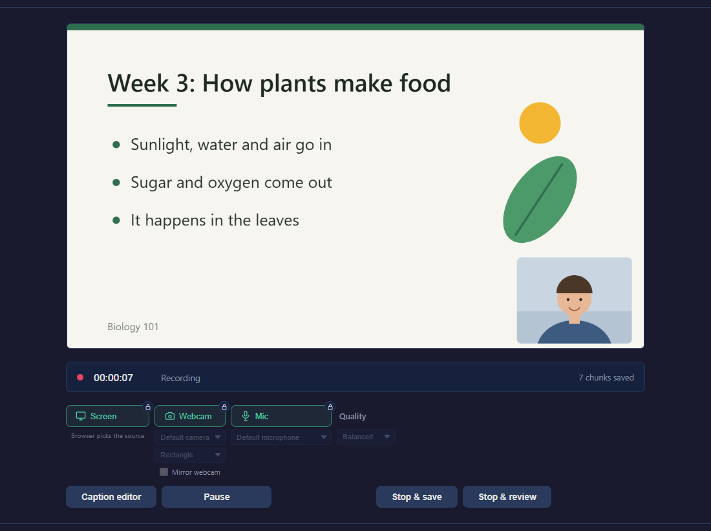
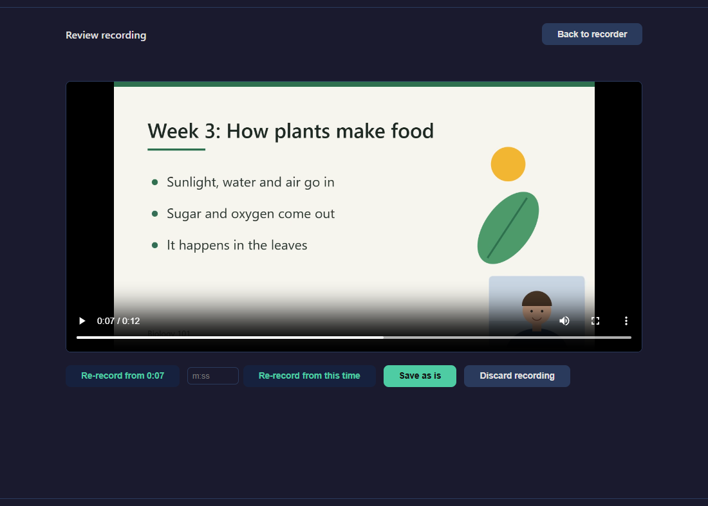
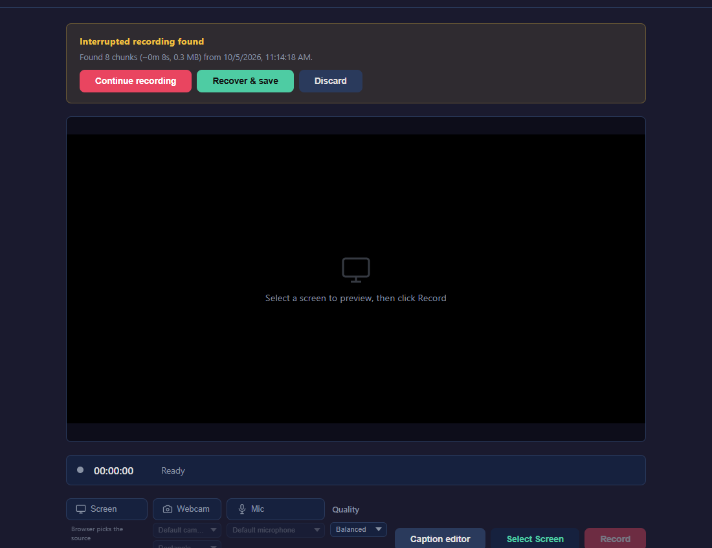
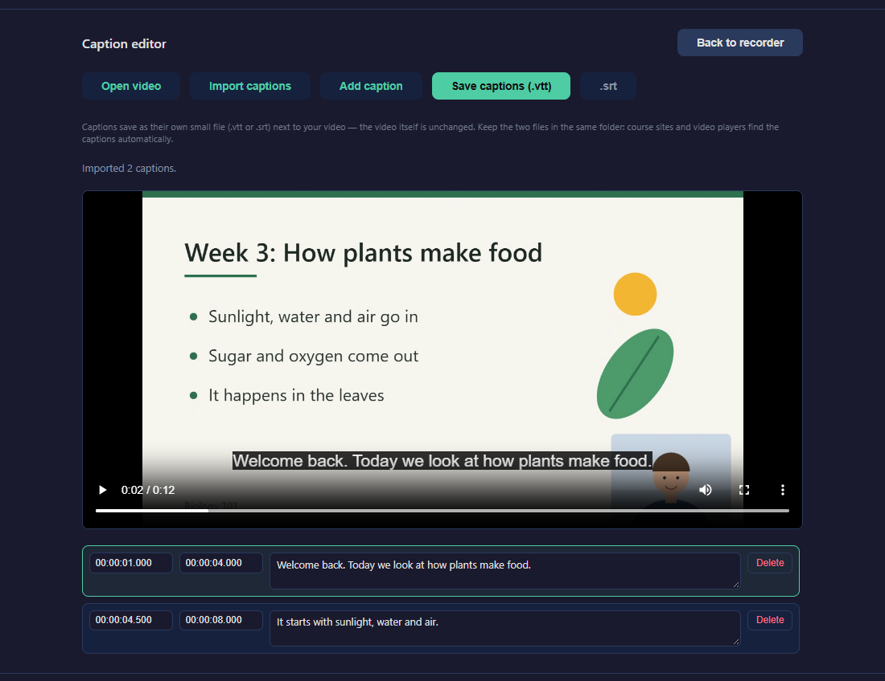

How to use DidaRec
Record your screen, your voice and your webcam, right in your web browser. There is nothing to install and no account to create.
Before you start
- Use Chrome or Edge. Edge is already on every Windows computer.
- Open DidaRec: bluebrazelton-dotcom.github.io/DidaRec. Save it as a bookmark so you can find it again.
- Your recording stays on your computer. Nothing is uploaded or sent anywhere.
Make your first recording

- Click Select Screen. Your browser asks what you want to show. Pick a whole screen, one window, or one browser tab, then click Share.
- Want your voice in the recording? Click Mic. Want your face in the corner? Click Webcam. The first time, your browser asks permission. Click Allow. A button is on when it is green.
- Click Record. The timer starts counting.
- When you are done, click Stop & save.
- Choose where to keep the file and click Save.
You can't lose your work. DidaRec saves as you go, every second. If your browser closes by accident, or the power goes out, open DidaRec again and it will offer your recording back.
Getting the picture and sound you want
- Move your webcam picture: drag it to a new spot. Drag its bottom-right corner to make it bigger or smaller.
- Change its shape: choose Rectangle, Square or Circle from the list under Webcam.
- Sound from a video or website: in step 1, share the tab that is playing it, and switch on Also share tab audio before you click Share.
- File size: the Quality list offers Smaller file, Balanced, and Best quality. Balanced is right for most lectures.
Pause, and what you can change while paused
Click Pause whenever you need a moment. Nothing is recorded while you are paused. Click Resume recording to carry on. It all ends up in one video.

While you are paused you can:
- Show a different screen or window. Click Change screen and pick the new one. Your viewers never see you looking for it.
- Turn your webcam off or on. Click Webcam.
- Mute or unmute your microphone. Click Mic.

What the little padlock means. While you are recording, the Screen, Webcam and Mic buttons show a small padlock. They can't be changed by accident. Pause first, and the padlock comes off Webcam and Mic.
When you finish
You have two ways to stop.
- Stop & save saves your video right away.
- Stop & review lets you watch it first. From there you can save it, fix a mistake, or throw it away.
Your video is saved as a .webm file. It plays in any web browser: drag the file onto a Chrome or Edge window. Most course sites and video sites accept it.
Fix a mistake without starting over
Click Stop & review instead of Stop & save. Your recording opens in a player.

Do the ending again
- Play or drag the video to the last moment that was good.
- Click Re-record from… (the button shows the time you chose). Everything after that moment is removed.
- Click Select Screen, then Record, and carry on from there.
- When you finish, click Stop & save. You get one video with the fix already in it.
If you know the time, type it in the small box (for example 4:30) and click Re-record from this time.
Changed your mind? Click Undo re-record before you start recording again, and the part you removed comes back.
Other choices on the review screen
- Redo last take appears when your video was recorded in more than one part. It removes only the most recent part, so you can do that part again.
- Save as is saves the video just as it is.
- Back to recorder keeps your video and lets you add more to it. A box at the top says Recording kept — not saved yet. Click Save it now there whenever you are ready.
- Discard recording deletes it. You are asked to confirm first.
If something goes wrong

- My browser closed, froze, or my computer shut down
- Open DidaRec again. A box at the top says Interrupted recording found. Click Recover & save to save what you had. Or click Continue recording to pick up where you left off, and both parts become one video.
- I clicked my browser's "Stop sharing" bar
- Your recording is paused, not lost. Click Change screen to share again, then Resume recording. Or click Stop & save to finish.
- I closed the save window without saving
- Your recording is still there. Refresh the page and click Recover & save.
- A box says "Recording stopped — ready to save"
- Click Save recording and choose where to keep it.
- There is no sound from my computer in the video
- Sound from your computer is only recorded if you switch on Also share tab audio (or Also share system audio) in the window where you choose what to share. Sharing a single window does not include its sound; share the tab or the whole screen instead.
- My microphone or webcam does not appear
- Click the padlock or settings icon at the left end of your browser's address bar and set Camera and Microphone to Allow. Then refresh the page.
One thing to avoid. A recording you have not saved yet is kept inside your browser. Clearing your browsing data erases it. Save first.
Add captions
Captions are added after your video is saved. They are kept in a small separate file that sits next to your video.

- Save your recording first.
- Click Caption editor, then Open video, and choose your saved video.
- Play the video. When someone starts speaking, click Add caption and type what is said.
- Repeat for the rest of the video. You can fix the words or the times at any point.
- Click Save captions (.vtt). Keep the captions file in the same folder as your video, with the same name.
Already have a captions file, for example one made automatically by your course site? Click Import captions to bring it in, correct it, and save it again.
Your caption work is remembered as you go. If you close the page, open the same video again and you can continue where you stopped.
Quick answers
- Where did my video go?
- In the folder you picked when you clicked Save. If you are not sure, look in your Downloads or Videos folder for a file whose name starts with recording- and today's date.
- Is there a time limit?
- No. There is no time limit, no watermark and no account.
- Can I record just my webcam, with no screen?
- Yes. Click Webcam to turn it on, then click Screen to turn the screen off. Then click Record.
- Why are some buttons locked while I record?
- So nothing changes by accident in the middle of your video. Click Pause to change your screen, webcam or microphone.
- Can I use Firefox?
- Yes, with three differences. Your video arrives as a download, and DidaRec asks you to confirm it arrived. Sound from your computer is not recorded. And you cannot re-record from a point in the first few seconds of a recording. Chrome and Edge do not have these limits.
- Who can I ask for help?
- DidaRec is free and open source, made by DidaWorks. Report a problem at github.com/bluebrazelton-dotcom/DidaRec/issues.